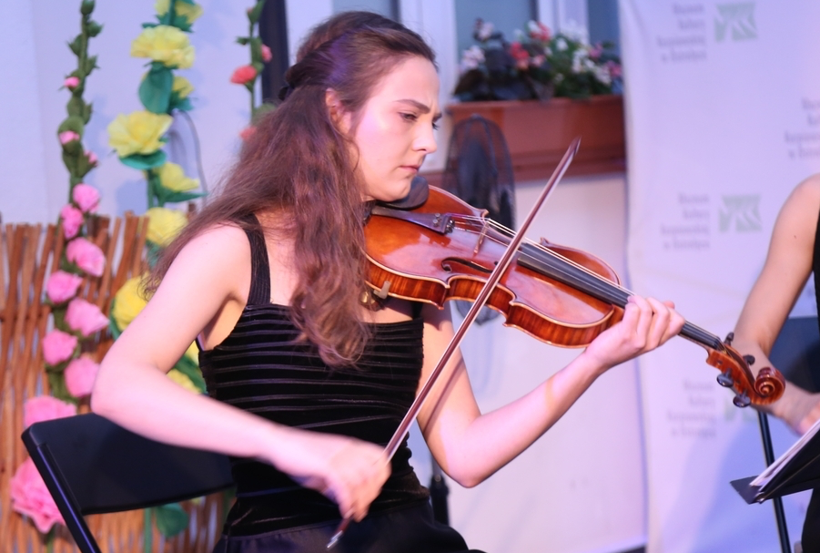

For many years, I've heard people say that symphonic and chamber music were going to die off when "this generation passes". The logic goes that all classical music audiences are senior citizens, and all patrons of the arts (so important for this music for centuries for its survival) are old and rich and out of touch, unlike the audiences of popular music, who are young, energetic, and will play for a couple of drinks at a bar. Classical music puts you to sleep, is background music for films and TV, and something you might interact with at Christmas time. It's an art form on its death bed. A museum piece which academia is keeping alive.
There's truth to some of that received "wisdom". There aren't many young music fans, relatively speaking, listening to classical music (or jazz, for that matter) versus other genres. It could indeed be argued that academia is keeping classical music (and, again, jazz) alive by teaching it as the main way of becoming a professional musician. Schools of popular music (like Berklee) are few and far between, while classical music is a pillar.
That said, if you put together all of the college kids around the world studying this music, and then the fact that a good portion will then land a job with an orchestra and/or teach lessons, and perhaps teach at colleges themselves, it would seem that the music is far from dying out with some nebulous "generation" of old people. And consider the audience - if you take every young musician's family and friends and multiply it by the amount of seats in an orchestra, that's a packed house. And then consider that a lot of wealthy parents are going to help fund the art that gives their children their livelihood, and the myth pretty much dies, not the music.
There is one troubling thing with classical music, however, that does sort of support the idea of it being a dinosaur. If you look at the huge amount of albums by young artists from 2021, they are still playing the music of the same dozen or so composers that have been played for centuries and centuries - Bach, Mozart, Beethoven, Chopin, Schubert, Brahms, Debussy, etc. "Modern" is still used to talk about 20th century classical music from nearly 100 years ago. Rarely is an original, contemporary composer given much of a chance at a concert hall. The minimalists, and "classical crossover" artists (a great majority from Iceland) have begun taking their music to different types of venues, even popular music stages (Nils Frahm, from the 2020 mix, for instance, played at a rock/rap club).
This is the tricky part for young musicians who want to do more than play the same old dead white guy pieces from centuries past. I'm always on the lookout for the young classical artists who are also composers - and with Poland's Hania Rani and Dobrawa Czocher, I found some last year! Rani, who put out her first album of original music at age 29 and is now 31, has now put out a handful of her own records in the last couple of years, including her most recent, Inner Symphonies, this time with her longtime friend Czocher. Czocher, who is 30, co-authored the music on Inner Symphonies, but is better known as a renowned featured cellist in the Szczecin Philharmonic. Despite being less of a composer than her friend Hania, her input and presence are absolutely essential to the atmosphere of Rani's brainchild.  The ambitious record was recorded live in Szczecin’s Philharmonic Hall, home of Czocher and her fellow musicians, including violinist Kornelia Gradzka (pictured at right), who appears here on "Anima".
Rani and Czocher have known each other since they were teens in music school, and this isn't the first record they have collaborated on. Back in 2015, Rani enlisted Czocher's help to record 10 Rani arrangements of Polish rock star Grzegorz Ciechowski’s songs. In the mix were also a few Rani originals, thus setting the stage for what was to come later. While Czocher is indeed adventurous, the more interesting of the two to me is Rani, who seems to have a vision and plenty of inspiration to continue writing her own works. Honestly, as much as I love many of the "classical crossover" artists of today, so many sound the same - a minimalist, atmospheric and beautiful soundscape that Icelandic composers have been doing for years now. Hania Rani has something else going on. Like Nils Frahm (a German, as you may recall), she seems to have a different vision in mind that, though heavily influenced by minimalists like Philip Glass, is also ventures into other more modern territory. Like Frahm, her music can be calming and sweeping, but also intense and drumlike in its rhythms. She just released a short EP of her playing 4 of her songs live in Poland's Studio S2. This live solo performance was also filmed and you can see it here!